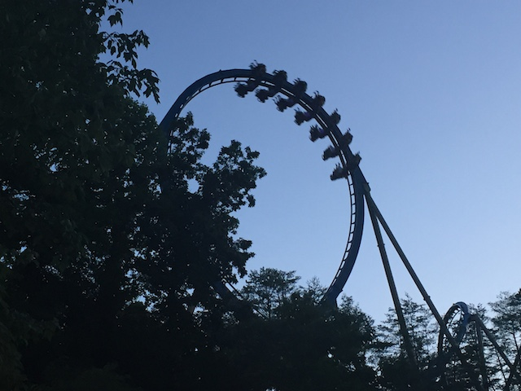
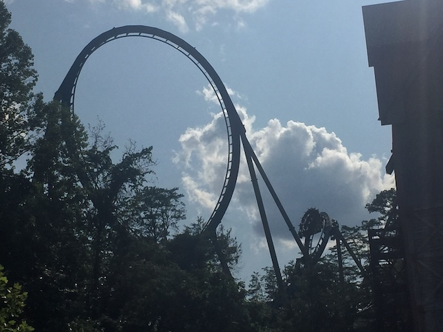
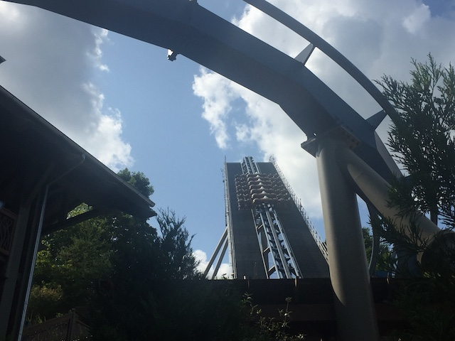
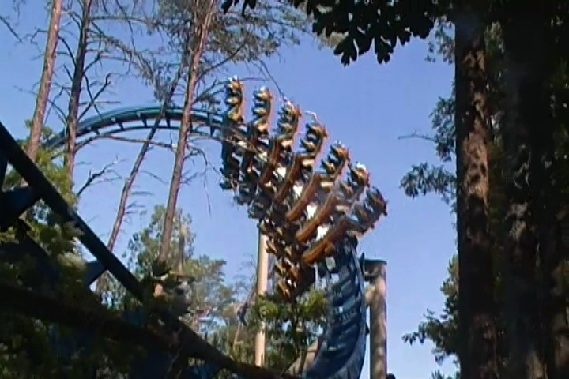
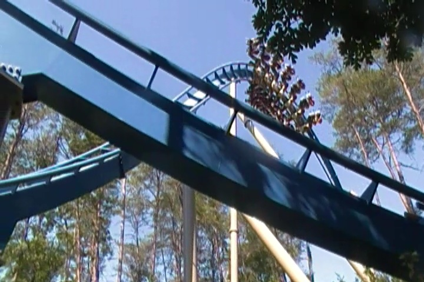
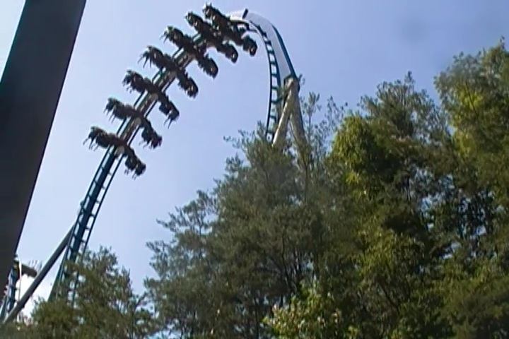

| |
Wild Eagle Review

We're here at Dollywood. Today's ride we'll be reviewing for you is Wild Eagle. This is another one of those B&M Wingriders that every complains are forceless and not very intense. And yeah. Wild Eagle isn't super intense. But it is a lot of fun. We get in the cars, pull down on the rubber vests (watch out, they're going to tighten and it's not going to be pleasant), and away we go. We roll around a turn and climb the lifthill. It's not very big, but we still get a nice view of Dollywood and the Smokey Mountains in general. Oh, and another fun thing to note. While the lifthill of Wild Eagle itself isn't super big, it has the Tatsu effect, where because you're on a hill, you're much higher than you initially thought. But enough of that. We reach the top and head down the first drop. It's not an amazing first drop or anything, but it's fun and gives us some nice speed. There's even a tiny little pop of airtime in the back. It's not insane or anything, but it's fun and the only airtime you're going to be experiencing on this ride. We then soar into a vertical loop. You know? Loops are actually quite rare on Wingriders. I never really thought about it. But yeah. They are. The only other one I can think of with a loop is one in China (though they're apparently constructing a clone of that one. Also in China), and they're doing everything there. So that's just to be expected. Anyways, there's nothing special about the loop. It's fun, but aside from being on a Wingrider, it's pretty ordinary. We then head into a sort of Zero G Roll. These are common on Wingriders, and yeah. It really sort of feels like you're feeling zero Gs here. In a weird way, you don't even really feel upsidedown here. It feels like the world around you is flipping while you just stay rightside up. It's kind of a cool feeling. We then go through an Immelman loop, and yeah. It's not super forceful at all, but it's very floaty and a lot of fun. You know what I just realized? Wild Eagle essentially follows the B&M Formula. Well, not officially, but it does have the B&M flow of just being a bunch of inversions. Floaty inversions in particular. I know the Wing Riders generally are considered to be more floaty than other B&Ms, but they at least had other stuff. Right now, Wild Eagle is pretty much just inversions so far. And to prove my point, we head right into a corkscrew. And just like all the inversions. It doesn't have a whip. It's a big, wide, and floaty corkscrew, similar to that on Tatsu, or another Wing Rider I rode, Raptor. We then head into a small little hill. Now you might think that there's some airtime on this hill. It looks like it should give a good pop. But sadly, nope. There is no airtime on this hill. There's not even much of a drop after you go into a sort of low to the ground turn, as we just hop up onto the hill. We head around this turn, and head up another small hill. Eh, we're losing speed here. I really hope something fun is coming up. Ooh. A sort of downward helix. Getting better. Wee! BRAKE RUN!!! DAMN IT!!! So yeah. Wild Eagle may mostly be inversions, and it may be on the short side, but it's still a really fun ride. It fits in beautifully with Dollywood, the views are fantastic, the inversions, though not forceful, are floaty and fun. Plus, this ride has it's very own freaking theme song. "The Sky is Not the Limit" by Dolly Parton herself. Well, it's a coaster at Dollywood. Of course the song is gonna be sung by Dolly Parton! Who else would sing it dumbass!!? It's a shame that the song is only avaliable in a couple Youtube videos as I actually like the song. The only problem with the ride are the constantly tightening restraints. Damn it! If Cedar Point and Holiday World can run their wing riders without chest compressions, so should you! *Sigh* Oh well. But yeah. Be an eagle! Not a chicken! Check out Wild Eagle when visiting Dollywood.
7/10
Location: Dollywood
Opened: 2012
Built by: B&M
Last Ridden: July 24, 2019
Wild Eagle Photos






Home
|